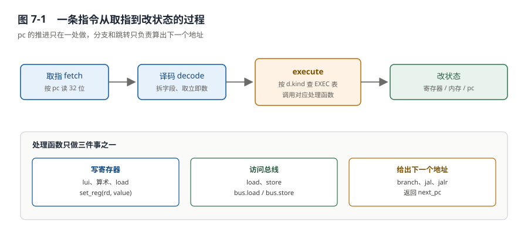
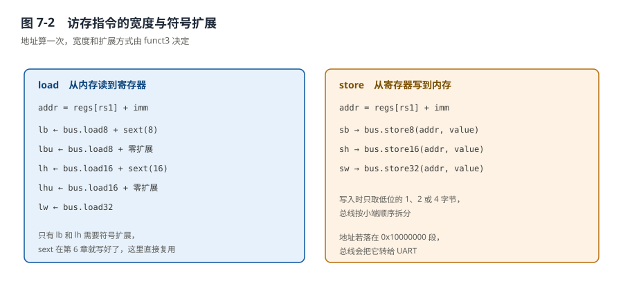
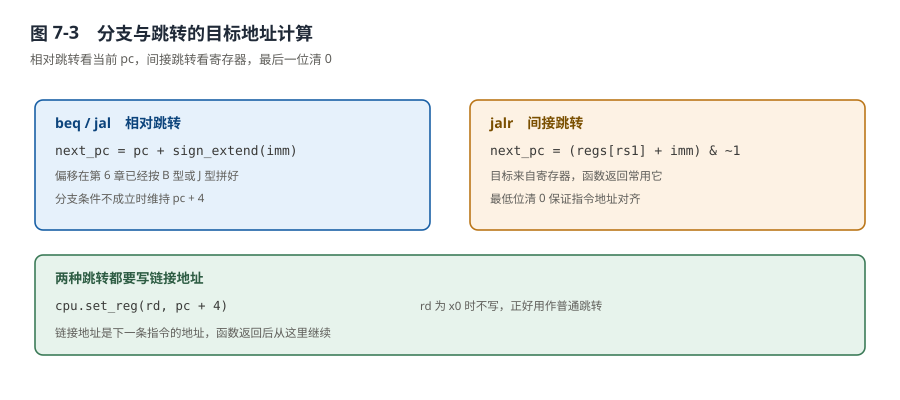
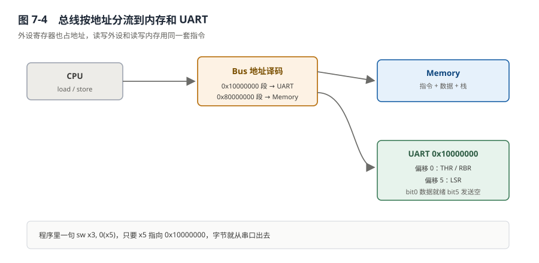

第 7 章 用 Python 写模拟器：执行与访存
本章导读
上一章的模拟器能取指、能译码，但只能把指令打印出来，寄存器始终没变过。这一章给它接上执行部分。算术运算改寄存器，访存指令走总线，分支跳转改 pc。等这些齐了，第 3 章写的汇编程序就能在模拟器里跑起来，每执行一条指令打印一次寄存器状态。最后再加一个简化的串口，让程序能输出字符。
7.1 执行一条指令要改什么
译码之后，手里有一个 Inst，里面装着操作码、寄存器号、立即数和指令类别。执行要做的事，说到底就是改三样东西：寄存器、内存、pc。
算术指令只改寄存器。load 和 store 要碰内存。分支跳转要改 pc，让下一条指令不在顺序的位置上。ecall 特殊，它让模拟器停下来。
这三件事的分布如附图。

图 7-1 一条指令从取指到改状态的过程
先定接口。执行函数拿到三个东西：CPU 状态（读写 pc 和寄存器）、译码结果、总线（访问内存和串口）。返回是否继续运行。
def execute(cpu, d, bus):
"""执行一条已译码指令，返回 running；pc 的推进集中在这里。"""
pc = cpu.get_pc()
next_pc, running = EXEC[d.kind](cpu, d, bus, pc)
cpu.set_pc(next_pc)
return running这里有两点值得说。第一，pc 的推进集中在 execute 里做。每个处理函数返回它算出的 next_pc，普通指令返回 pc + 4，分支指令返回跳转目标。这样不会漏掉 pc 更新，也不会出现两处都改 pc 的混乱。第二，用 EXEC 查表分发，而不是写一长串 if。表的键是上一章译出的 kind，值是对应的处理函数。
处理函数的统一签名是 (cpu, d, bus, pc)，返回 (next_pc, running)。参数多，但形状一致，查表才使得起来。
7.2 最简单的两条：lui 和 auipc
从最简单的开始。这两条指令只写一个寄存器，别的都不碰。
lui 把立即数直接放进 rd。上一章的 imm_u 已经把高 20 位摆好、低 12 位填了 0，这里直接写进去就行。
def ex_lui(cpu, d, bus, pc):
cpu.set_reg(d.rd, d.imm)
return u32(pc + 4), Trueauipc 多一步，要把当前 pc 加上去。这个名字就是 add upper immediate to pc 的缩写。
def ex_auipc(cpu, d, bus, pc):
cpu.set_reg(d.rd, u32(pc + d.imm))
return u32(pc + 4), True两处都调用了 u32。这是本章反复要用的工具。Python 的整数不限宽度，5 加 10 得 15 没问题，但 0xFFFFFFFF + 1 会得到 0x100000000，九位十六进制数，不是 32 位处理器的行为。得手动截断。
MASK = 0xFFFFFFFF
def u32(value):
return value & MASK
def s32(value):
return sext(value, 32)s32 反过来，把一个 32 位模式按补码解释成 Python 的负数。有符号比较和算术右移都要用它。sext 是上一章写的函数，直接拿来用。
7.3 ALU 运算：把第 5 章的电路搬进软件
第 5 章用门电路搭了 ALU，这里用 Python 函数实现同样的运算。R 型指令的两个操作数都来自寄存器，I 型指令的一个操作数来自立即数。
运算本身用字典装起来，每个名字对应一个 lambda。
R_OPS = {
"add": lambda a, b: u32(a + b),
"sub": lambda a, b: u32(a - b),
"sll": lambda a, b: u32(a << (b & 0x1F)),
"slt": lambda a, b: 1 if s32(a) < s32(b) else 0,
"sltu": lambda a, b: 1 if u32(a) < u32(b) else 0,
"xor": lambda a, b: a ^ b,
"srl": lambda a, b: u32(a) >> (b & 0x1F),
"sra": lambda a, b: u32(s32(a) >> (b & 0x1F)),
"or": lambda a, b: a | b,
"and": lambda a, b: a & b,
}几个细节要留意。移位量只取低 5 位，因为 RV32I 的寄存器移位位数是 5 位；取 b & 0x1F 正好模拟硬件里只接低 5 根线。srl 是逻辑右移，先按无符号看；sra 是算术右移，先按有符号看，移动完再截回 32 位。slt 和 sltu 的区别也在这里，一个走 s32，一个走 u32。
处理函数先取操作数，再查表算，最后写回。
def ex_op(cpu, d, bus, pc):
a = cpu.get_reg(d.rs1)
b = cpu.get_reg(d.rs2)
cpu.set_reg(d.rd, R_OPS[d.name](a, b))
return u32(pc + 4), TrueI 型这边稍有不同。移位指令的立即数字段里，低 5 位是移位量，高 7 位是 funct7；其他指令的立即数就是一个普通的 12 位数。上一章的 imm_i 已经把它符号扩展好了，加减和逻辑运算直接用，slli、srli、srai 单独取低 5 位。
I_OPS = {
"addi": lambda a, imm: u32(a + imm),
"slti": lambda a, imm: 1 if s32(a) < imm else 0,
"sltiu": lambda a, imm: 1 if u32(a) < u32(imm) else 0,
"xori": lambda a, imm: a ^ u32(imm),
"ori": lambda a, imm: a | u32(imm),
"andi": lambda a, imm: a & u32(imm),
"srli": lambda a, imm: u32(a) >> (imm & 0x1F),
"srai": lambda a, imm: u32(s32(a) >> (imm & 0x1F)),
}def ex_op_imm(cpu, d, bus, pc):
a = cpu.get_reg(d.rs1)
if d.name in ("slli", "srli", "srai"):
shamt = d.imm & 0x1F
if d.name == "slli":
result = u32(a << shamt)
elif d.name == "srli":
result = u32(a) >> shamt
else:
result = u32(s32(a) >> shamt)
else:
result = I_OPS[d.name](a, d.imm)
cpu.set_reg(d.rd, result)
return u32(pc + 4), True写这一章时发现第 6 章的译码表漏了 slli。它的 funct3 是 001，上一章的 OP_IMM_NAME 没列这一项，译出来会是 op-imm?。现在补上即可。
OP_IMM_NAME = {0: "addi", 1: "slli", 2: "slti", 3: "sltiu", 4: "xori", 6: "ori", 7: "andi"}同时让 disasm 认识它。这是渐进开发里常见的事：写执行代码时才会发现译码漏了一种情况。
7.4 访存：地址算一次，宽度各不同
load 和 store 都要先算地址，再用上一章的 bus 读写。地址是 regs[rs1] + imm，算完也要 u32 截断。
def ex_load(cpu, d, bus, pc):
addr = u32(cpu.get_reg(d.rs1) + d.imm)
if d.name == "lb":
value = sext(bus.load8(addr), 8)
elif d.name == "lbu":
value = bus.load8(addr)
elif d.name == "lh":
value = sext(bus.load16(addr), 16)
elif d.name == "lhu":
value = bus.load16(addr)
else:
value = bus.load32(addr)
cpu.set_reg(d.rd, value)
return u32(pc + 4), True宽度和符号扩展都由 d.name 决定，如附图。lb 和 lh 要符号扩展，lbu 和 lhu 只要零扩展，lw 读出来的就是 32 位，不必再处理。第 6 章的 sext 在这里派上用场，传 8 或 16 进去就行。

图 7-2 访存指令的宽度与符号扩展
store 更简单，没有符号扩展这回事，只需按宽度把值的低位写出去。
def ex_store(cpu, d, bus, pc):
addr = u32(cpu.get_reg(d.rs1) + d.imm)
value = cpu.get_reg(d.rs2)
if d.name == "sb":
bus.store8(addr, value)
elif d.name == "sh":
bus.store16(addr, value)
else:
bus.store32(addr, value)
return u32(pc + 4), True7.5 分支与跳转：只负责算出下一个地址
分支指令比较两个数，条件成立才跳。六种比较写在一起，最后统一返回目标或 pc + 4。
def ex_branch(cpu, d, bus, pc):
a = cpu.get_reg(d.rs1)
b = cpu.get_reg(d.rs2)
name = d.name
if name == "beq":
taken = a == b
elif name == "bne":
taken = a != b
elif name == "blt":
taken = s32(a) < s32(b)
elif name == "bge":
taken = s32(a) >= s32(b)
elif name == "bltu":
taken = u32(a) < u32(b)
else:
taken = u32(a) >= u32(b)
return (u32(pc + d.imm) if taken else u32(pc + 4)), True有符号和无符号的比较各走各的转换，和 ALU 里的 slt、sltu 是同一套道理。
jal 是相对跳转，顺手把返回地址写进 rd。jalr 是间接跳转，目标来自寄存器加立即数，最低位要清 0。

图 7-3 分支与跳转的目标地址计算
def ex_jal(cpu, d, bus, pc):
cpu.set_reg(d.rd, u32(pc + 4))
return u32(pc + d.imm), True
def ex_jalr(cpu, d, bus, pc):
target = u32((cpu.get_reg(d.rs1) + d.imm) & ~1)
cpu.set_reg(d.rd, u32(pc + 4))
return target, True图里把两种跳转画在一起，是因为它们都要写链接地址。rd 为 x0 时不写，于是同一条指令也能当普通跳转用，这正是第 3 章里 j 伪指令的实现方式。
7.6 收尾：ecall 停机与分发表
剩下的三条很短。fence 在单核功能模型里没有实际动作，直接往下走。system 类的 ecall 和 ebreak 让模拟器停下来，返回 running = False。非法的指令字抛异常，别让它悄悄混过去。
def ex_fence(cpu, d, bus, pc):
return u32(pc + 4), True
def ex_system(cpu, d, bus, pc):
return u32(pc + 4), False
def ex_illegal(cpu, d, bus, pc):
raise ValueError("illegal instruction at pc=0x%08x" % pc)把处理函数登记到表里，execute 就能按类别找到它们。
EXEC = {
"lui": ex_lui, "auipc": ex_auipc,
"op": ex_op, "op-imm": ex_op_imm,
"load": ex_load, "store": ex_store,
"branch": ex_branch, "jal": ex_jal, "jalr": ex_jalr,
"fence": ex_fence, "system": ex_system, "illegal": ex_illegal,
}完整的 execute.py 就是把上面这些函数按依赖顺序排好：先是 u32、s32，再是各个处理函数，然后是 EXEC 表和 execute。放在 code/python/07_simulator/ 下。
7.7 运行器：让程序真正跑起来
有了执行函数，还差一个循环：装载程序，取指，译码，执行，重复到停机。run.py 做这件事，并在每步之后打印发生变化的寄存器。
def run(words, data_chunks=(), max_steps=1000, trace=True):
bus = Bus()
load_program(bus, words, data_chunks)
cpu = CPU(bus)
steps = 0
running = True
while running and steps < max_steps:
pc = cpu.get_pc()
word = cpu.fetch()
d = decode(word)
before = list(cpu.regs)
running = execute(cpu, d, bus)
after = list(cpu.regs)
steps += 1
if trace:
changed = ["x%d=0x%08x" % (i, after[i])
for i in range(1, 32) if before[i] != after[i]]
print("pc=0x%08x %-24s %s"
% (pc, disasm(word), " ".join(changed)))
if steps >= max_steps:
raise RuntimeError("step limit reached")
return cpu, bus, stepsbefore 和 after 两份寄存器快照相减，只打印变了的那些。一路打印全部 32 个寄存器会很吵，看 traces 时反而找不到重点。max_steps 是死循环的保险，跑过一千条还没停机就报错。
装载程序也有讲究。words 是机器码列表，从 0x80000000 开始一条条放。data_chunks 放数据，可以是整数列表（按字放），也可以是字节串（按字节放）。
def load_program(bus, words, data_chunks=()):
for i, word in enumerate(words):
bus.store32(BASE + 4 * i, word)
for addr, blob in data_chunks:
if isinstance(blob, int):
bus.store32(addr, blob)
elif isinstance(blob, (list, tuple)):
for j, word in enumerate(blob):
bus.store32(addr + 4 * j, word)
else:
for j, byte in enumerate(blob):
bus.store8(addr + j, byte)这里踩过一个坑。数组求和的数据是整数列表，初版把它当字节串处理，只写了五个字节，读出来的数组自然不对。现在按类型分支，整数列表按字写，字节串按字节写。
7.8 走通例子：数组求和
拿第 3 章的数组求和做个完整演示。程序用 encode.py 里的辅助函数拼出机器码，注释写着对应的汇编。
0 lui x1, 0x80000 # x1 指向数组
1 addi x1, x1, 256
2 addi x2, x0, 5 # 剩余 5 个数
3 addi x3, x0, 0 # 累加和清零
4 lw x4, 0(x1) # loop
5 add x3, x3, x4
6 addi x1, x1, 4
7 addi x2, x2, -1
8 bne x2, x0, -16 # 回 loop
9 lui x5, 0x10000 # x5 指向串口
10 sw x3, 0(x5)
11 ecall运行结果的前几步和后几步如下。
pc=0x80000000 lui x1, 0x80000 x1=0x80000000
pc=0x80000004 addi x1, x1, 256 x1=0x80000100
pc=0x80000008 addi x2, x0, 5 x2=0x00000005
pc=0x8000000c addi x3, x0, 0
pc=0x80000010 lw x4, 0(x1) x4=0x0000000a
pc=0x80000014 add x3, x3, x4 x3=0x0000000a
...
pc=0x80000010 lw x4, 0(x1) x4=0x00000032
pc=0x80000014 add x3, x3, x4 x3=0x00000096
...
pc=0x80000028 sw x3, 0(x5)
pc=0x8000002c ecall数组是 [10, 20, 30, 40, 50]，累加和 0x96 就是十进制 150。第 8 条 bne 的偏移是 -16，从 pc 0x80000020 回到 0x80000010，正好是循环开头。整段跑 32 步。
这份 traces 就是调试工具。哪条指令没按预期改寄存器，一眼就能看到。第 8 章搭硬件时，会用测试台打印同样的信息，和这里对照。
7.9 给模拟器接一个串口
现在加外设。RISC-V 采用内存映射 I/O，外设寄存器也占一段地址，读写外设和读写内存用同一套指令。第 12 章会详细讲，这里先接一个简化的 16550 UART 让程序能输出字符。
先做 UART 本身。真实的 16550 有一堆寄存器，这里只留两个：偏移 0 是数据寄存器，写进去就是发送，读出来就是接收；偏移 5 是线路状态寄存器，bit 0 表示有数据可读，bit 5 表示发送保持寄存器为空。
class UART:
def __init__(self):
self.rx_fifo = []
self.tx_log = []
def feed(self, data):
if isinstance(data, str):
data = data.encode("ascii")
self.rx_fifo.extend(data)
def read(self, offset):
if offset == RBR:
return self.rx_fifo.pop(0) if self.rx_fifo else 0
if offset == LSR:
status = LSR_THRE
if self.rx_fifo:
status |= LSR_DR
return status
return 0
def write(self, offset, value):
if offset == THR:
self.tx_log.append(value & 0xFF)
def output(self):
return bytes(self.tx_log).decode("ascii", errors="replace")feed 是宿主机往模拟器里送字符，tx_log 记录模拟器发出去的字符。状态位里 THRE 恒为 1，因为我们的串口没有真正的发送延迟，写进去就算发完了。
再写总线。它按地址分流：落在 UART 地址段的转给 UART，其余的转给内存。对 CPU 来说，接口和原来的 Memory 一样，所以把 Bus 实例传给 CPU 即可，不必改 CPU 的代码。

图 7-4 总线按地址分流到内存和 UART
class Bus:
def __init__(self, mem=None, uart=None):
self.mem = mem if mem is not None else Memory()
self.uart = uart if uart is not None else UART()
def _is_uart(self, addr):
return UART_BASE <= addr < UART_BASE + UART_SIZE
def load8(self, addr):
if self._is_uart(addr):
return self.uart.read(addr - UART_BASE)
return self.mem.load8(addr)
def store8(self, addr, value):
if self._is_uart(addr):
self.uart.write(addr - UART_BASE, value)
return
self.mem.store8(addr, value)字节访问分流后，半字和字访问就用字节拼。这样 UART 只需实现 read 和 write，不必管 16 位和 32 位。
def load16(self, addr):
return self.load8(addr) | (self.load8(addr + 1) << 8)
def store16(self, addr, value):
self.store8(addr, value)
self.store8(addr + 1, value >> 8)
def load32(self, addr):
return (self.load8(addr)
| (self.load8(addr + 1) << 8)
| (self.load8(addr + 2) << 16)
| (self.load8(addr + 3) << 24))
def store32(self, addr, value):
self.store8(addr, value)
self.store8(addr + 1, value >> 8)
self.store8(addr + 2, value >> 16)
self.store8(addr + 3, value >> 24)程序那边只要让 x5 指向 0x10000000，一句 sw x3, 0(x5) 就把字节送到了串口。数组求和程序末尾那句 sw 就是这个用意，它把结果 150 写进了 tx_log。
另一个示例程序逐字节读字符串，遇到结尾 0 停下，运行后 uart.output() 得到 Hi, RV32I!。这就是第 12 章访问外设的雏形：没有专门的 I/O 指令，全靠地址和读写。
7.10 实验
本章代码在 code/python/07_simulator/，目录里带了第 6 章的三个基础模块，可以独立运行。
cd code/python/07_simulator
python test_execute.pytest_execute.py 有 58 项检查，覆盖 32 位回绕、R 型和 I 型运算、五种 load 与三种 store、六种分支、jal 与 jalr、总线分流、UART 读写，以及两个完整程序。全部通过会打印 ALL TESTS PASSED。
想看执行轨迹，用 run.py 里的小例子，或者直接：
python -c "from programs import *; from run import run; run(SUM_PROGRAM, [(SUM_DATA_ADDR, SUM_DATA)])"调试时最有用的就是这份轨迹。初版测试和示例程序里有几处错误，都是靠轨迹和逐项核对找出来的：R 型用例把两个操作数写反、auipc 的期望值少加了一个 pc、jalr 前忘设源寄存器、数组求和的 add 指令把 x3 当成了两个源。这些问题藏在机器码里，光看十六进制很难发现，跑一遍轨迹就清楚了。
7.11 功能级模型的意义
到这一章为止，模拟器已经能跑完整的 RV32I 程序。它没有时钟，也没有流水线，一条指令接着一条执行。这恰恰是它的用处：把指令的语义单独拎出来，不受微结构细节干扰。
第 8 章搭单周期处理器时，硬件每个周期做完一条指令，结果应该和这里逐步执行一致。第 9、10 章引入流水线和转发，中间状态会复杂得多，但每条指令最终留下的状态仍然要对得上。有这个模型在，硬件仿真结果就有了一个可靠的参照。
现在还有两块没做。一是 CSR 和特权指令，ecall 只是停机，没有真正的异常号和陷阱处理；二是中断，定时器到点时 CPU 该响应什么。这些留到第 11 章。二是外设只做了串口，GPIO 和定时器留到第 12 章。
7.12 本章小结
- 执行函数按译码出的
kind查表分发到处理函数，处理函数返回下一个 pc 和是否继续运行，pc 的推进集中在execute一处。 - Python 整数不限宽度，所有运算结果都要用
u32截成 32 位；有符号比较和算术右移先用s32转成负数。 - R 型运算用
funct7和funct3共同区分，I 型移位指令的移位量取立即数低 5 位。第 6 章漏掉的slli在本章补上。 - load 按 funct3 决定读字节、半字还是字，
lb和lh要做符号扩展；store 按宽度写低位字节。 - 分支目标是
pc + imm，jal 也是相对跳转并写链接地址，jalr 目标是(rs1 + imm) & ~1。 - 总线按地址把访问分流给内存和 UART，CPU 看到的是同一套 load/store 接口。这样第 6 章的 CPU 代码不必改。
- 运行器打印每条指令后发生变化的寄存器，形成一份能用来调试程序状态的执行轨迹。
思考题
- 如果把
execute里的cpu.set_pc(next_pc)移到每个处理函数里各自实现，会有什么风险？举一个容易漏掉的路径。 sra的实现是u32(s32(a) >> (b & 0x1F))。如果去掉外层的u32，Python 会返回什么？对后续get_reg和分支比较有什么影响？jalr为什么要把目标地址的最低位清 0？如果不清，在 RV32I 上会发生什么？- 总线的
load32用四次load8拼成。如果访问 UART 地址段，这四次读分别读到什么？这样的设计对真实的 16550 合理吗？ - 运行器只打印变化的寄存器。如果想观察某个寄存器”被写了同样的值”，该怎么改？这样做在调试什么问题时有用？
下一章进入硬件实现，用 Verilog 搭一个单周期处理器，把这一章的软件模型变成真实的电路。